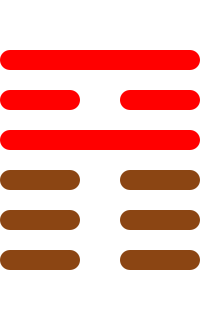

第三十五卦
晋卦

卦辞
康侯用锡马蕃庶，昼日三接。
晋卦象征晋升、进步与光明。卦辞意为：康侯用赏赐的马繁盛，白天三次接见。晋卦教导我们要积极进取，追求进步和光明。
彖传
晋，进也。明出地上，顺而丽乎大明，柔进而上行。是以康侯用锡马蕃庶，昼日三接也。
彖传说：晋，是进。明出地上，顺而丽乎大明，柔进而上行。因此康侯用赏赐的马繁盛，白天三次接见。
象传
明出地上，晋。君子以自昭明德。
象传说：明出地上，就是晋卦。君子应当效法这种精神，自己昭示明德。光明出于大地象征进步，要发扬光明品德。
爻辞
初六：晋如摧如，贞吉。罔孚，裕无咎
晋如摧如，坚守正道吉祥。没有诚信，宽裕无灾害。
初六爻位于最下方，进退两难。前进又后退，坚守正道吉祥。虽然没有诚信，但宽裕没有灾害。
六二：晋如愁如，贞吉。受兹介福，于其王母
晋如愁如，坚守正道吉祥。受此大福，于其王母。
六二爻得中得正，忧中求进。前进又忧愁，坚守正道吉祥。接受大的福气，来自王母。
六三：众允，悔亡
众人允诺，悔恨消亡。
六三爻位置不当，得众支持。得到众人的允诺，悔恨消亡，表示得到支持。
九四：晋如鼫鼠，贞厉
晋如鼫鼠，坚守正道危险。
九四爻接近君位，能力不足。前进如鼫鼠，坚守正道也危险，表示能力不够。
六五：悔亡，失得勿恤，往吉无不利
悔恨消亡，失得不要忧虑，前往吉祥无所不利。
六五爻居中尊位，无忧无虑。悔恨消亡，得失不忧虑，前往吉祥无所不利。
上九：晋其角，维用伐邑，厉吉无咎，贞吝
晋其角，维用伐邑，危险吉祥无灾害，坚守正道困难。
上九爻位于极点，过于刚强。前进到顶角，用于伐邑，危险吉祥无灾害，坚守正道困难。